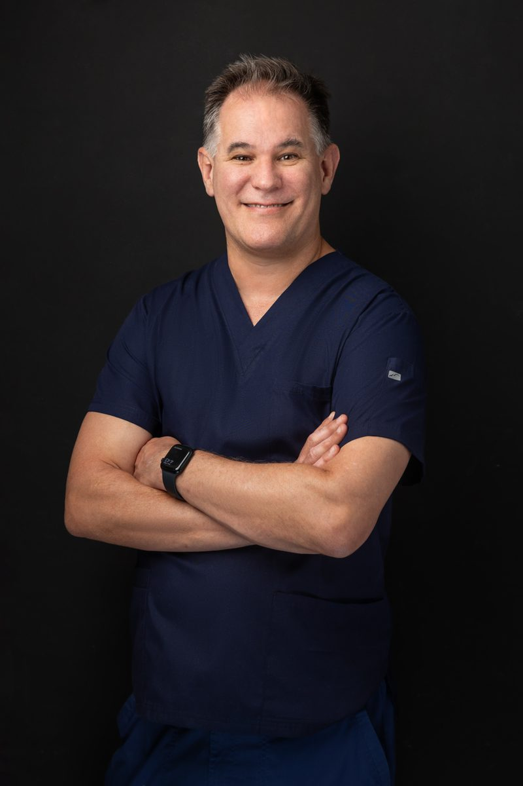

Founder · Vasectomy Australia
Dr Geoff Cashion
MBBS (University of Queensland) · FACRRM · FRCEM
A former rural GP and emergency doctor, Dr Cashion completed expert no-scalpel vasectomy training under Dr Doug Stein in Florida, with further training in Australia. He has dedicated his career to making safe, affordable vasectomy available to all Australian men.
He performs over 4,000 vasectomies a year — more no-scalpel vasectomies annually than any other doctor in Australia — and has performed more than 15,000 across his career.
“Dr Cashion was very friendly and informative through the whole process. The operation was quick and I had no discomfort at all.”
Google review